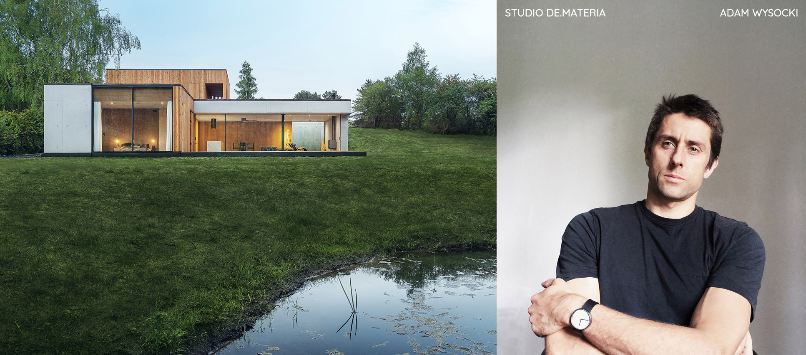
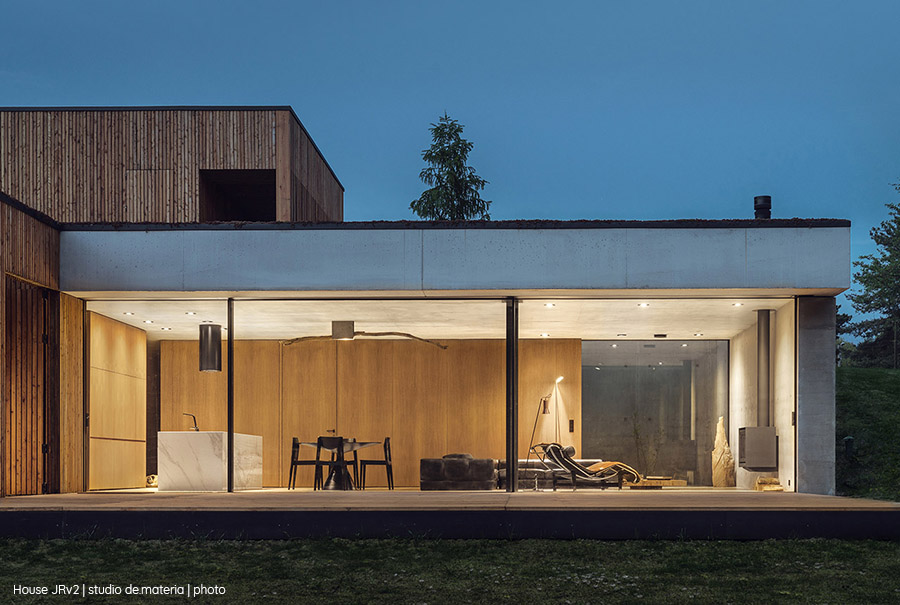
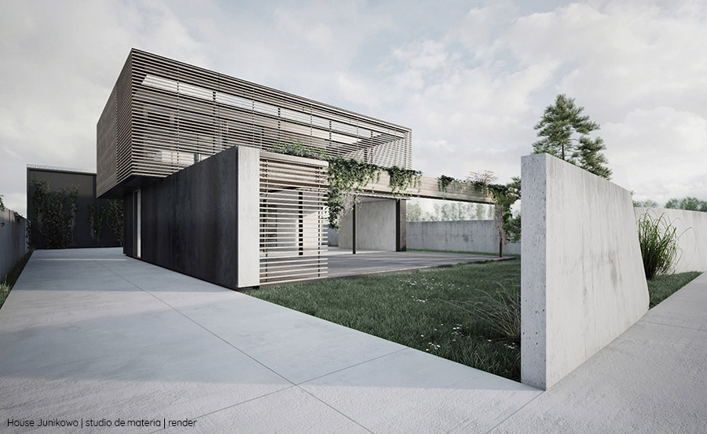
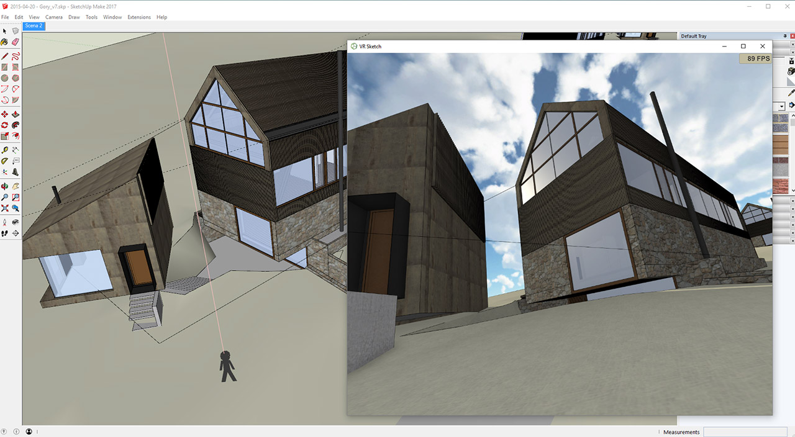
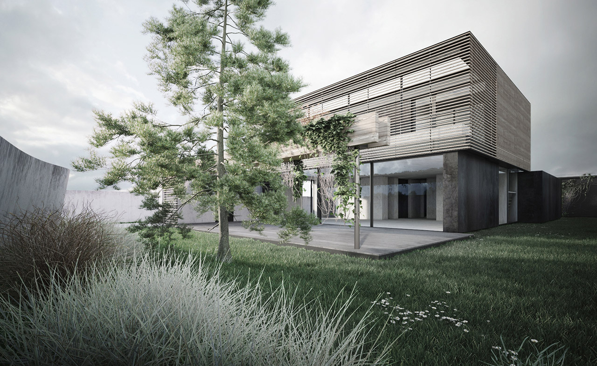

Interview with Adam Wysocki from Studio de Materia
Published on: 4 April 2018 by Maciej Fijalkowski
This post is an interview with Adam Wysocki from Studio de Materia, who is an early user and has contributed a lot of early feedback for VR Sketch. The interview has been translated from Polish and edited for clarity.
Hi Adam. Glad you could make it. I would like to ask you a few questions about your work as an architect and your experience with VR Sketch. Please introduce yourself to our readers first and tell us a bit about your work.
Hi, thanks for the interview. My name is Adam Wysocki and I’m an architect from Poznan, Poland. Since 2013, I have been running my own studio. Since then we have developed small, diverse projects, mainly residential. Our goal is to add valuable buildings to our environment through a customized architecture whose function and form are in harmony. For example, we are now building a complex of two mountain lodges in Karkonosze national park.

Please tell me something about your daily work - how involved are you in the various stages of the architectural projects.
My studio is very small, so I’m personally involved in all the steps, starting from the first contact with the client. During the conceptual stages of the project, I have direct contact with all the decisions made. Only during the later stages of the project, other people are getting more involved, either my co-workers or external contractors.
The first conceptual part is very important for me as this part defines the foundations of all the future decisions. The crucial piece of the conceptual part of the project is interaction with client, while taking into account the laws and restrictions on buildings. I try to put emphasis on “client first” strategy here - at the end of the day their wishes have to be articulated in the building. Creating perfectly functioning spatial choreography dressed with architectural guise that expresses my formal preferences is my goal for the design.
This part of the project often drags on, until both the client and I are satisfied with selected solutions.
How does virtual reality in general and VR Sketch in particular play a role here?
I had the opportunity to use virtual reality for the last couple months. This has revolutionized the conceptual part of the project. I can, directly and at all times, control the spatial relationships that happen in the project. Besides the fact that virtual reality is a great tool for designing objects at different scales, from the smallest detail to urban planning, it has immense impact on the verification of decisions taken as if they were real. For me, once I start BEING in the virtual reality, it BECOMES reality. When I enter my own project, I am able to shape it like a sculptor or demiurg.
I still begin with flat drawings in autocad and later I export them to Sketchup and VR Sketch. Modelling in virtual reality my early ideas become tested. Using virtual reality lets me experiment much more easily with new solutions that would otherwise be considered too risky.
In this day and age, Computer Aided Design is very advanced and we can do a lot just using design programs that don’t require VR. However, VR Sketch is a very easy way to work on a model while having real control. It’s akin to creating a life-size mockup with the difference being the ability to make dynamic and spontaneous changes while looking from a perspective from ant-size to king-kong.
I can’t say that what I do would be impossible without VR, but it would be definitely a lot less fun.
How do you think Virtual Reality will change architecture?
I think that my clients, who often find it hard to read complicated drawings and “frozen” visualizations, can now use tools to quickly verify the quality of chosen solutions. At the same time, architects could choose even more audacious solutions to both formal and functional problems. It will certainly help avoid a lot of mistakes and architecture will gain.
What would you tell people who have not tried VR Sketch just yet?
Entering the project in VR, or even a demo often brings the fear of unknown. Don’t be afraid! I don’t understand why people are so skeptical - it’s enough to put a virtual reality helmet on once and you will feel the difference immediately. These days I definitely prefer working in Virtual Reality, where the sun always shines than in front of a sad monitor :-) The revolution in design is coming in seven mile steps.
What would you say about the VR Sketch user interface?
It’s very good, but it requires some time and effort to be proficient. The real pleasure only comes after learning how to use it for a bit, when you realize it’s actually very simple and intuitive. I don’t think you even need to know sketchup well - it’s simple enough to learn directly in VR.
Thanks a lot! I hope it will be useful for our readers!
